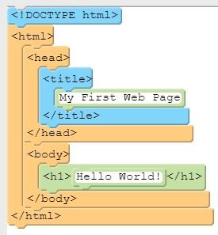

How To Do This Quiz
These instructions are in index.html AND in instructions.html. When you press Run, it only shows you index.html - so you have to keep track of what you are putting into index.html and where it came from. Also - these instructions have examples of all the code you need to do this test!
Setup
There are 6 pages with problems:
- 1sections.html
- 2formatting.html
- 3resources.html
- 4lists.html
Each page has an image of what either the code or the page (when you click Run) should look like. For example, the code for 1sections.html should look like this:

What to do
Set up index.html
- Get the problem code
- Go to the next page you are working on (like 1sections.html)
- Get the code:
- Click inside the code
- Press Control+A to select all
- Press Control+C to copy it
- Paste it into index.html
- Click inside index.html
- Press Control+A to select all
- Press Control+V to paste it
Fix Code
- Look at the top of the page for an HTML comment. It tells you which image the page should look like and what to do.
- Press Run to see what the page looks like now.
- Fix the code on the page. There may be indentation problems (if the instructions say) as well as code problems.
- Press Run when you think it is done, and see if it matches the picture of what it is supposed to look like.
Paste from index.html to original
- When the code looks good and the image matches, press Control+A to select all of the code, then Control+C to copy it.
- Go back to the original page (like 1hello.html) and press Control+A to select all, then Control+V to paste the new code on top.
-
Next Page
Go to the next page to work on (like 2survey.html). To read these instructions again. get them from instructions.html (because you removed them from index.html) and paste them onto index.html.
Completing This Quiz
Keep pasting the HTML over index.html, reworking it, and then pasting it back where it belongs.
When done, submit the link to your work to the Web Unit Test assignment in Classroom. The link should begin with https://replit.com/@.